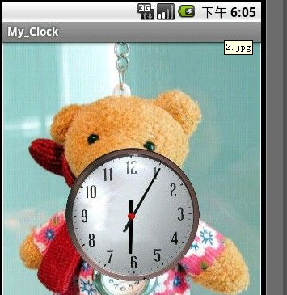

Android View中的Clock案例
下图是最终的运行结果！

下来看看My_Clock.java文件内容 My_Clock.java。
import android.app.Activity;import android.os.Bundle;
public class My_Clock extends Activity {
@Override
public void onCreate(Bundle savedInstanceState) {
super.onCreate(savedInstanceState);
setContentView(R.layout.main);
}
}
我们在来看看My_ClockView.java的代码：
import java.util.TimeZone;import android.content.BroadcastReceiver;
import android.content.Context;
import android.content.Intent;
import android.content.IntentFilter;
import android.content.res.Resources;
import android.graphics.Canvas;
import android.graphics.drawable.Drawable;
import android.os.Handler;
import android.text.format.Time;
import android.util.AttributeSet;
import android.view.View;
public class My_ClockView extends View {
private Time mCalendar;
// 表盘上的给指针图片
private Drawable mHourHand;
private Drawable mMinuteHand;
private Drawable mDial;
private boolean mAttached; // 附着状态
private final Handler mHandler = new Handler(); // 定一个Handler类实现更新时间
// 定义表盘的宽和高
private int mDialWidth;
private int mDialHeight;
private float mMinute;
private float mHour;
private boolean mChanged;
public My_ClockView(Context context) {
this(context, null);
}
public My_ClockView(Context context, AttributeSet attrs) {
this(context, attrs, 0);
}
public My_ClockView(Context context, AttributeSet attrs, int defStyle) {
super(context, attrs, defStyle);
Resources r = context.getResources();
// 通过资源加载各图片，用于绘制时钟
mDial = r.getDrawable(R.drawable.clock);
mHourHand = r.getDrawable(R.drawable.hour_hander);
mMinuteHand = r.getDrawable(R.drawable.minute_hander);
mCalendar = new Time();
mDialWidth = mDial.getIntrinsicWidth();
mDialHeight = mDial.getIntrinsicHeight();
}
@Override
protected void onAttachedToWindow() {
super.onAttachedToWindow();
if (!mAttached) {
mAttached = true;
IntentFilter filter = new IntentFilter(); // 注册一个消息过滤器，获取时间改变、时区改变的action
filter.addAction(Intent.ACTION_TIME_TICK);
filter.addAction(Intent.ACTION_TIME_CHANGED);
filter.addAction(Intent.ACTION_TIMEZONE_CHANGED);
getContext().registerReceiver(mIntentReceiver, filter, null,
mHandler);
}
mCalendar = new Time();
onTimeChanged();
}
@Override
protected void onDetachedFromWindow() {
super.onDetachedFromWindow();
if (mAttached) {
getContext().unregisterReceiver(mIntentReceiver); // 反注册消息过滤器
mAttached = false;
}
}
@Override
protected void onMeasure(int widthMeasureSpec, int heightMeasureSpec) {
// TODO Auto-generated method stub
// 取得组件的宽和高，以及指定模式
int widthMode = MeasureSpec.getMode(widthMeasureSpec);
int widthSize = MeasureSpec.getSize(widthMeasureSpec);
int heightMode = MeasureSpec.getMode(heightMeasureSpec);
int heightSize = MeasureSpec.getSize(heightMeasureSpec);
float hScale = 1.0f;
float vScale = 1.0f;
if (widthMode != MeasureSpec.UNSPECIFIED && widthSize < mDialWidth) {
hScale = (float) widthSize / (float) mDialWidth;
}
if (heightMode != MeasureSpec.UNSPECIFIED && heightSize < mDialHeight) {
vScale = (float) heightSize / (float) mDialHeight;
}
// 如果表盘图像的宽和高超出其组件的宽和高，即要进行相应的缩放
float scale = Math.min(hScale, vScale);
setMeasuredDimension(
resolveSize((int) (mDialWidth * scale), widthMeasureSpec),
resolveSize((int) (mDialHeight * scale), heightMeasureSpec));
}
// 绘制组件的方法，使用Canvas对象绘制组件的具体表现
@Override
protected void onDraw(Canvas canvas) {
// TODO Auto-generated method stub
super.onDraw(canvas);
// 用changed标识来判断是否需要重新绘制
boolean changed = mChanged;
if (changed) {
mChanged = false;
}
final int mRight = getRight();
final int mLeft = getLeft();
final int mTop = getTop();
final int mBottom = getBottom();
int availableWidth = mRight - mLeft;
int availableHeight = mBottom - mTop;
int x = availableWidth / 2;
int y = availableHeight / 2;
final Drawable dial = mDial;
int w = dial.getIntrinsicWidth();
int h = dial.getIntrinsicHeight();
boolean scaled = false;
if (availableWidth < w || availableHeight < h) {
scaled = true;
float scale = Math.min((float) availableWidth / (float) w,
(float) availableHeight / (float) h);
canvas.save();
canvas.scale(scale, scale, x, y);
}
if (changed) {
dial.setBounds(x - (w / 2), y - (h / 2), x + (w / 2), y + (h / 2));// 设置界线
}
dial.draw(canvas);
canvas.save();
canvas.rotate(mHour / 12.0f * 360.0f, x, y);// 根据系统时间绘制时针旋转的角度
final Drawable hourHand = mHourHand;
if (changed) {
w = hourHand.getIntrinsicWidth();
h = hourHand.getIntrinsicHeight();
hourHand.setBounds(x - (w / 2), y - (h / 2), x + (w / 2), y
+ (h / 2));
}
hourHand.draw(canvas);
canvas.restore();
canvas.save();
canvas.rotate(mMinute / 60.0f * 360.0f, x, y); // 同理，分针旋转的角度
final Drawable minuteHand = mMinuteHand;
if (changed) {
w = minuteHand.getIntrinsicWidth();
h = minuteHand.getIntrinsicHeight();
minuteHand.setBounds(x - (w / 2), y - (h / 2), x + (w / 2), y
+ (h / 2));
}
minuteHand.draw(canvas);
canvas.restore();
if (scaled) {
canvas.restore();
}
}
private void onTimeChanged() { // 获取时间改变，计算当前的时分秒
mCalendar.setToNow();
int hour = mCalendar.hour;
int minute = mCalendar.minute;
int second = mCalendar.second;
mMinute = minute + second / 60.0f;
mHour = hour + mMinute / 60.0f;
mChanged = true;
}
private final BroadcastReceiver mIntentReceiver = new BroadcastReceiver() { // 监听获取时间改变action
@Override
public void onReceive(Context context, Intent intent) {
if (intent.getAction().equals(Intent.ACTION_TIMEZONE_CHANGED)) {
String tz = intent.getStringExtra("time-zone");
mCalendar = new Time(TimeZone.getTimeZone(tz).getID());
}
onTimeChanged(); // 获取新的时间
invalidate(); // 刷新屏幕，强制类调用onDraw方法实现分针时针的走动
}
};
}
最后我们在来看看我是这么布局的。
<?xml version="1.0" encoding="utf-8"?><LinearLayout xmlns:android="http://schemas.android.com/apk/res/android
android:layout_width="fill_parent
android:layout_height="fill_parent
android:background="@drawable/theme
android:gravity="center
android:orientation="vertical" >
<com.android.yhb.My_ClockView
android:layout_width="200px
android:layout_height="200px" />
</LinearLayout>
对上面的代码进行一下简单的分析总结：
1.关于onMeasure()方法，该方法里面传入的参数是widthMeasureSpec和heightMeasureSpec，可以通过这两个参数获取规定的宽和高以及模式。关于模式有三种：
A、UNSPECIFIED说明容器对组件本身的尺寸没有任何限制，组件可以根据自己的需要随意规划自己的尺寸。这种情况下，容器提供的尺寸没有任何意义了；
B、EXACTLY说明容器严格要求其组件的尺寸必须为给定尺寸，不能自己决定尺寸大小；
C、AT_MOST说明容器提供的尺寸是一个最小值，也就是说，组件可以随意决定自己的尺寸，只要不大于容器指定的尺寸即可。可以通过方法public static int makeMeasureSpec(int size, int mode)进行定义模式。
关于onDraw()方法的主要步骤分析：大致是这样的，先比较dial/minuteHand/hourHand与View的大小，如果大的话对canvas进行缩放，然后接着就是设置setBounds();这个方法只要就是为了把图片画在制定的矩形区域里面，其实你可以任意设置这个区域的大小，当然图片也会跟着矩形区域的大小进行缩放，这里并没有进行缩放，即按照原图片的大小进行矩形区域的绘画，只是把这个矩形区域花在了view的中央，这样把限制在这个矩形区域里面的图片绘画在已经缩放过的cavans中的，达到了缩放效果。由于已经在画dial的之前对canvas进行了缩放，所以之后的hourHand/minuteHand直接画在canvas上，而无需再次进行缩放。